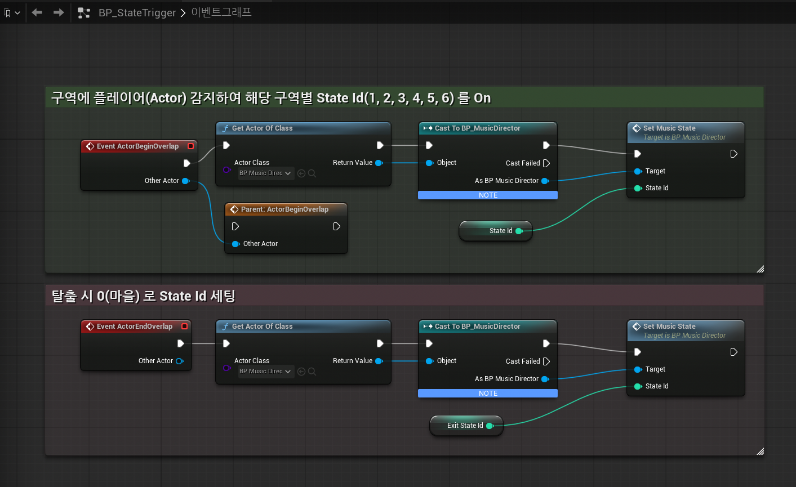
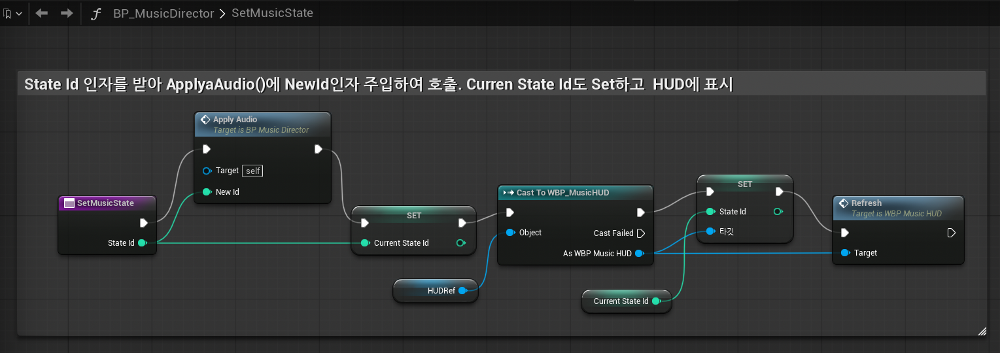
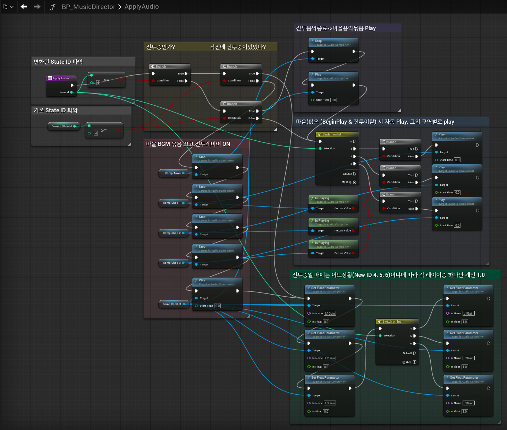
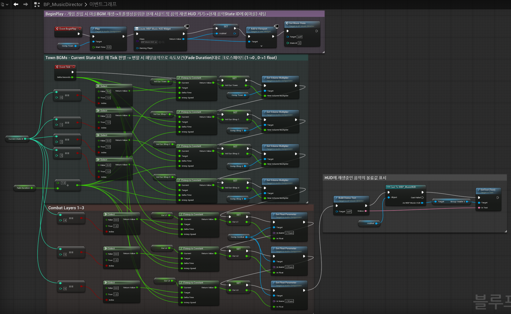
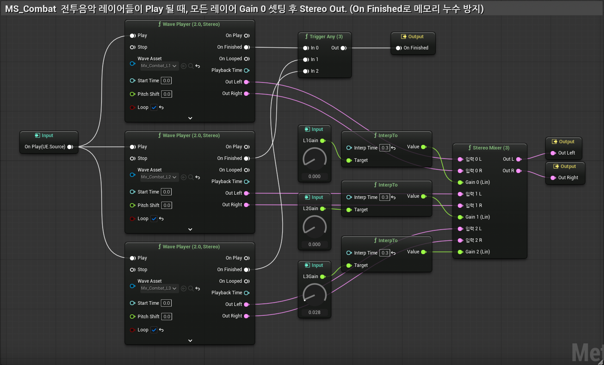
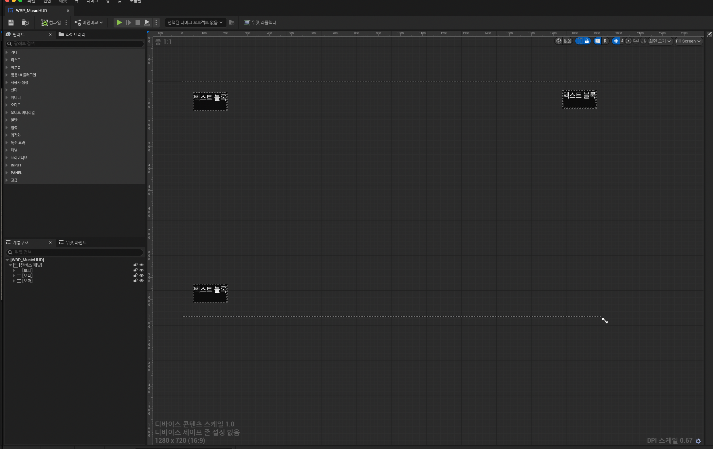

맵 구역에 들어가면 음악이 끊김 없이 전환되고, 바닥 재질에 따라 발자국 소리가 달라지는 상태 반응형 사운드 시스템. 블루프린트가 '지금 무슨 상황인지'를, 메타사운드가 '어떤 소리를 어떻게 낼지'를 책임집니다.
01
인터랙티브 BGM 시스템
구역(State) → 음악 — 끊김 없는 크로스페이드 + 전투 레이어 믹싱 + 실시간 HUD
핵심 한 줄: 맵 구역을 음악에 직접 연결하지 않고 State 정수 하나로 추상화했습니다. 트리거는 "몇 번 구역"만 넘기고(SetMusicState), 디렉터가 그 번호로 ① 음악을 켜고/끄고(ApplyAudio) ② 음량을 매 프레임 부드럽게 보간하고(Tick) ③ HUD를 갱신합니다. DT_MusicStates(DataTable)가 State 0~6 ↔ 곡·구역명을 정의합니다.
데이터 흐름 — 한눈에
[플레이어가 구역에 진입]
│
▼
BP_StateTrigger / BP_StateTriggerSphere ── 자기 State 번호를 전달
│ SetMusicState(번호)
▼
BP_MusicDirector (음악의 두뇌)
├─ ApplyAudio() 재생/정지 — 전투 진입 시 마을묶음 Stop + 전투 Play [이벤트 · 전환 순간만]
├─ Set CurrentStateId "지금 몇 번 구역"을 기록
├─ Tick (매 프레임) 음량을 목표로 한 발짝씩 보간 → 끊김 없는 크로스페이드 [매 프레임]
└─ WBP_MusicHUD 실시간 음량% · 재생상태 표시
※ 재생/정지는 ApplyAudio(이벤트), 음량은 Tick(매 프레임) — "단일 권위"로 분리
핵심 에셋 — 블루프린트 / 메타사운드 노드 구조

BP_StateTrigger — 구역 트리거(박스·구체). 진입 시 StateId, 이탈 시 ExitStateId를 디렉터에 전달. instance-editable로 한 BP가 7개 구역을 모두 처리(마을 0 ~ 정예몹 6).

SetMusicState() — 트리거가 두드리는 중계 관문. ApplyAudio(음악) → CurrentStateId(상태 기록) → HUD Refresh 순서로 처리. (ApplyAudio가 먼저 — 직전 State를 읽어야 하므로)

ApplyAudio() — 상태머신. "지금(New) vs 직전(Current)"을 비교해 전환 종류를 가리고, 전투 진입 시 마을·상점 묶음을 Stop + 전투 묶음 Play. 상점은 Is Playing으로 중복 재생 방지(중간부터).

BP_MusicDirector — 음악의 두뇌. Tick이 매 프레임 FInterpToConstant로 각 트랙 음량을 목표(1.0/0.0)까지 1.1초에 걸쳐 보간 → 끊김 없는 크로스페이드. 음량의 단일 권위.

MS_Combat (메타사운드) — 전투음악 3레이어를 동시에 싱크 재생하고 게인만 조절하는 수직 레이어링. State 4/5/6 → L1/L2/L3 게인을 교체해 박자를 유지한 채 강도를 전환.

WBP_MusicHUD — 실시간 상태창. 매 프레임 디렉터가 소유한 보간값을 그대로 읽어 음량% · 재생상태 · 발자국 재질을 표시("표시 = 실제").
설계 포인트위치(구역)와 음악을 직접 묶지 않고 State 정수로 중개 — 트리거는 State만, 음악 시스템은 State만 보는 느슨한 결합. 그리고 재생(ApplyAudio·이벤트)과 음량(Tick·매 프레임)을 단일 권위로 분리해, 한 프레임에 같은 음량을 두 번 쓰는 버그를 구조적으로 차단했습니다.
02
발자국 재질별 랜더마이즈
이동거리 트리거 + 바닥 재질 판별 + 메타사운드 2겹 랜덤마이즈
핵심 한 줄: 애니메이션 노티파이에 의존하지 않고 이동거리(보폭 175cm)로 한 걸음을 감지합니다. 발밑으로 광선(LineTrace)을 쏴 밟은 바닥의 PhysicalMaterial을 읽어 유리/콘크리트를 가르고, 메타사운드가 샘플·피치를 랜덤으로 섞어 기계음 없는 발소리를 냅니다.
데이터 흐름 — 한눈에
BP_MusicDemoChar.Tick
이동거리 ≥ 보폭(175cm) → PlayFootstep()
└ 발밑 LineTrace → 바닥 PhysicalMaterial
유리 = 0 / 콘크리트 = 1 (+ LastFootstepWasGlass 저장)
│
▼ SpawnSoundAtLocation(MS_Footstep) + SetFloatParameter("Surface", 0/1)
MS_Footstep (메타사운드)
Surface 값 → Mono Mixer 게인으로 콘크리트/유리 갈래 선택
각 갈래 : Random Get(샘플 랜덤) → Wave Player ◀ Random(피치 랜덤)
▼ 🔊 매 걸음 다른 발자국
설계 포인트 발자국을 애니메이션에 묶지 않고 이동거리로 독립 트리거 — 공유 애님 그래프를 건드리지 않고도 동작합니다. 재질은 PhysicalMaterial로 판별하고, 메타사운드 랜덤마이즈로 같은 소리가 반복되는 기계음을 방지했습니다.
이 시스템은 Unreal Engine 5의 블루프린트와 메타사운드로 직접 설계했습니다. 블루프린트 로직은 AI 협업(MCP)으로 구현했지만 — 트리거 → State → 음악으로 이어지는 구조, "음량은 Tick, 재생은 ApplyAudio"의 단일 권위 분리, 전투 음악의 수직 레이어링 같은 설계 의도는 직접 이해하고 설명할 수 있습니다. 두 메타사운드(MS_Footstep · MS_Combat)는 노드 배선까지 직접 빌드했습니다.
서보빈 · Game Music Composer · Sound Designer · Developer · bobinseo.com